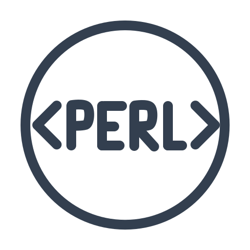
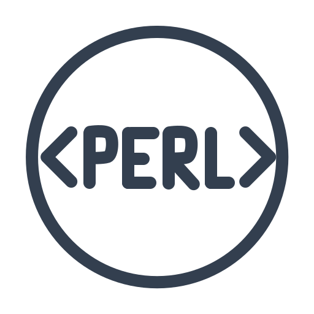

About me
My name is Markus. I am an aspiring future {software} developer from Munich, Germany. I am currently participating in the Software Engineering course at Career Foundry. My goal is to work in a more hands on capacity, as far as tech product development is concerned.
Technologies I work with


 
